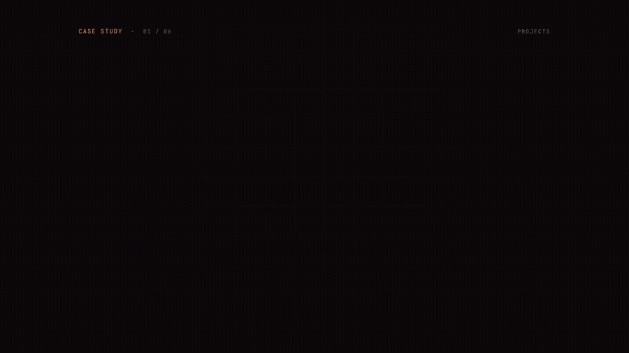
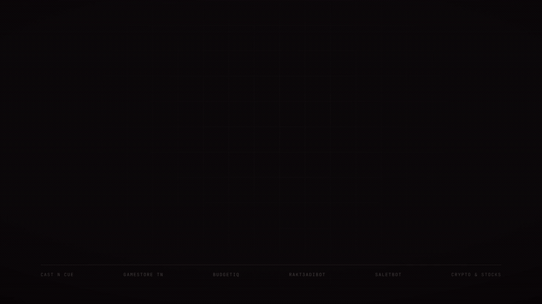
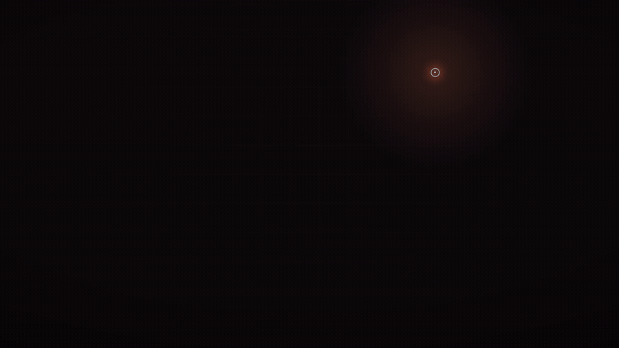
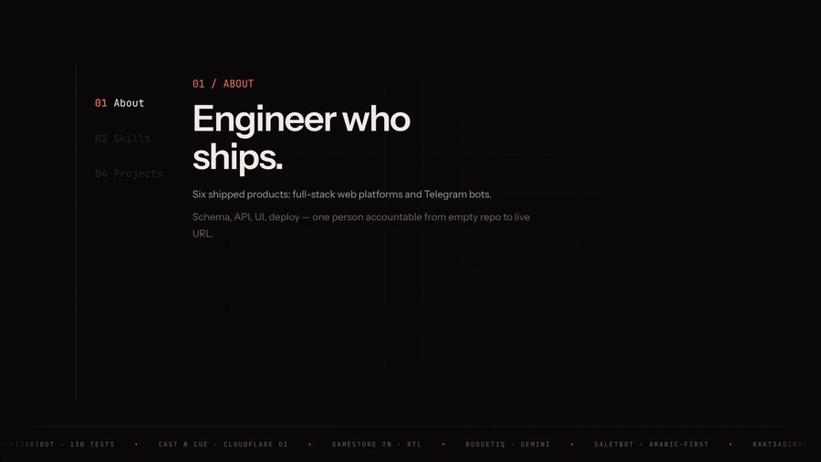

Amine Mabrouk — portfolioMotion lab · five prototypes
Five motion prototypes.
Each one is a real portfolio surface, built in the Night Workshop palette and
captured frame by frame at 1280 × 720, 30 fps. Pick one and it becomes the
authored motion moment for that surface.
01 Hero6.4s
Ignition
A filament crosses the wordmark and the letters take the light behind it — embers lift off, then the portrait and the proof settle in.
Lands in WordmarkHero
02 Case study6.4s

Bench assembly
The card draws its own hairline frame, the screenshot wipes in, then title, problem, solution and result land in order — one pass of light at the end.
Lands in Projects · case-study card
03 Section header6.2s

Measured header
The headline rises through its mask while a draughtsman's rule draws underneath and ticks itself out; the six project names are written in, left to right.
Lands in Projects · section header
04 Project index6.6s

Pointer light
A pointer walks the index. The row holds still while the surface under it lifts, its hairline warms, and the case-study preview slides out from behind the row.
Lands in Projects · index list hover
05 Scroll handoff6.6s

Bench handoff
One measured scroll carries About into Skills into Projects: the index tracks the position, headings resolve as they cross the reading line, the loop band never stops.